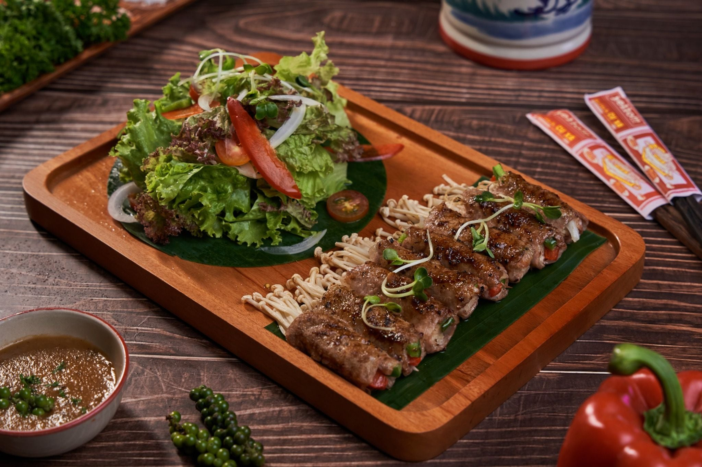
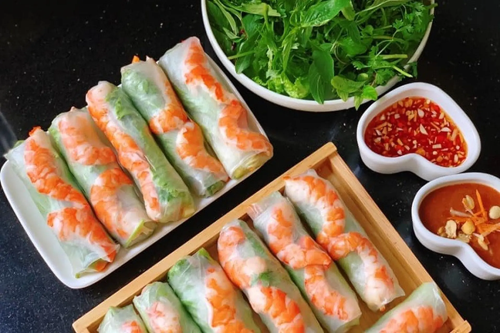

CÔNG THỨC MỚI NHẤT

NƯỚNG
Cách làm bò cuộn nấm kim châm nướng siêu ngon tại nhà
Bò cuộn nấm kim châm nướng là sự kết hợp hoàn hảo giữa vị giòn của nấm với vị ngọt của thịt bò.

CUỐN
Cách làm gỏi cuốn tôm thịt thanh mát chuẩn vị Việt Nam
Gỏi cuốn là món ăn nhẹ nổi tiếng với bánh tráng mềm cuốn cùng tôm, thịt, bún và rau sống tươi mát. Khi chấm với nước mắm chua ngọt hoặc sốt đậu phộng sẽ tạo nên hương vị thanh nhẹ và rất hấp dẫn.

CÁCH CHẾ BIẾN KHÁC
Cách làm cơm tấm sườn nướng chuẩn vị Sài Gòn
Cơm tấm sườn nướng thơm lừng ăn kèm trứng ốp la và nước mắm chua ngọt. Món ăn quen thuộc nhưng luôn hấp dẫn với mọi thực khách.

XÀO
Cách làm thịt lợn xào sả ớt ngon tê tái cõi lòng
Thịt lợn xào sả ớt là món ăn đơn giản với thịt mềm, thơm mùi sả và vị cay nhẹ của ớt. Món này ăn cùng cơm nóng rất đậm đà và hấp dẫn.